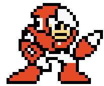
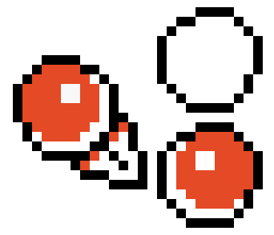
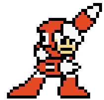

To defeat Crash Man in Mega Man 2, follow these strategies!
Equip Metal Blades:
They are particularly useful in this stage, allowing for quick and effective attacks on enemies.
Avoid Robots:
Take out the three robots patrolling the air above you to prevent them from knocking you off the ladders.
Use the Leaf Shield:
Switch to the Leaf Shield to help protect you while climbing the ladders.
Climb the Ladders:
Ascend the ladders while avoiding enemies and using the Leaf Shield for protection.
Defeat the Hardhat Enemies:
These enemies are only vulnerable when they lift their lids to fire three-way shots, so take them out when they are exposed.
Reach the Ladder:
Navigate through the screens to reach the ladder in the top corner without being knocked off. By following these strategies, players can successfully defeat Crash Man and advance in the game.